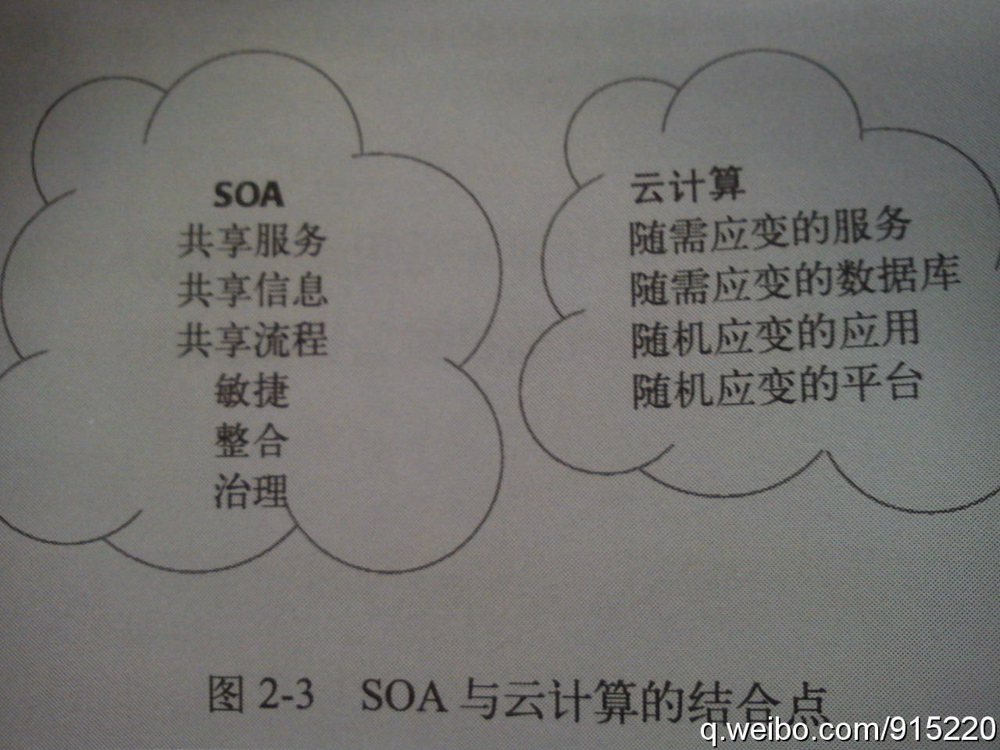

通常认为SOA提供的服务限定在企业的防火墙内，而“云计算实际上使用基于互联网资源的SOA, 包括服务，应用程序，目录以及工具等。并在整体上接受把业务流程部署到企业防火墙之外的想法。它不是SOA或传统企业架构的替换，而是一种新的架构理念”-《云计算与SOA》 
年代之分肯定会引发口水仗，作为70后，我认同80后和90后的看法，70后现今的地位大部分原因是赶上了好时候。有这么好的运气，我也不觉得该不好意思，出生的时代又不是我选的。只是，我会提醒自己不要站自己的角度去挑剔80后以及90后等。“该死的70后“ - FT中文网 网页链接
使用了公司的会议室的在线预定功能，才发觉这里面很奇怪的逻辑和入口。最方便的入口是通过Thunderbird客户端的"New event（新事件）", 会议室的属性是“attendee（参加者）”,添加和查找会议室要选"attendee"中的“resource”。这流程太不直观了，所以我定会议室都是打电话请前台妹妹帮忙定。
中国移动搞的OPhone绝对是个怪胎，本来是Android系统，但还不支持从Google的app stores上下载软件。本来Android系统内置的一些程序，比如日历，可以很方便地和在线的Google Calendar同步，硬是给阉割了，变成个单机版的。中国移动被联通引进的iPhone打击得还不够。
我听朋友说过类似的事情，她家的泰迪除了姥姥外，不受别人待见。姥姥不在家，那只泰迪会讨好每个人，姥姥一回来，那只狗就会冲其它人龇牙，凶得很。当时听得我那个感慨，狗仗人势这成语太形象了。@下午茶77:关于狗仗人势。晚上在小区散步，一只小博美远远地跟在主人后面，虽然主人来回催它，它一直小心翼翼地不敢往前走，主人解释说：它很胆小，因为看到我们在前面，所以不敢走过来。好不容易把它唤了过来，在经过我们的时候，它突然很厉害地向我们狂吠——因为主人就在眼前。